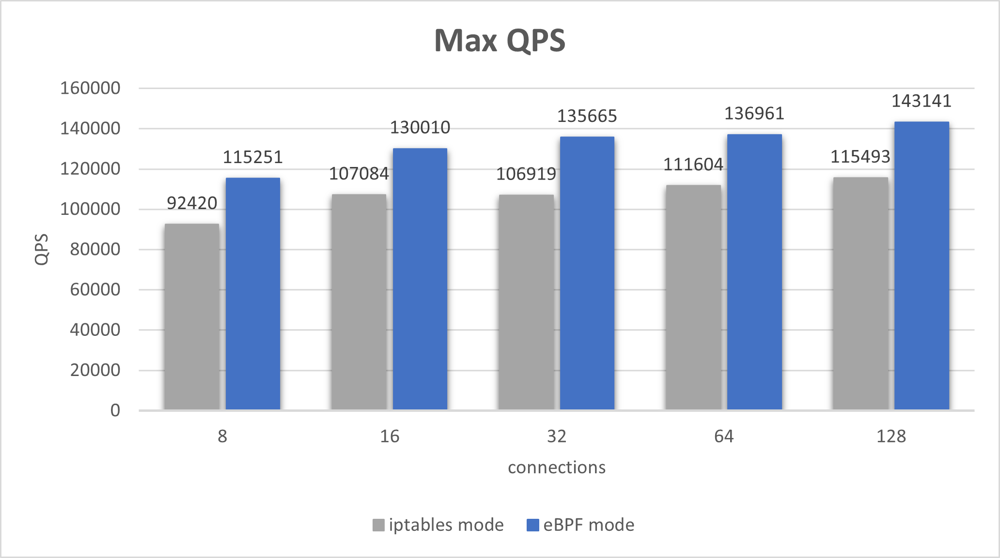

WTF is up with Istio and eBPF?
Istio does not use eBPF
For anything at all.
Why would Istio use eBPF?
Istio uses iptables to transparently redirect traffic from an application container into a sidecar proxy container so it can do all the fancy service mesh stuff with that traffic, however the iptables redirection adds some (small but nonzero) latency overhead. At large scales that overhead adds up. To alleviate this overhead eBPF can be used to bypass much of the Linux network stack for a nice performance boost. In fact there is a CNCF project called Merbridge that does exactly that for Kuma, Linkerd, and Istio.


Above images are from the Merbridge docs, which are based on these slides from Thomas Graf's 2018 Kubecon talk "Accelerating Envoy with the Linux Kernel".
What about this blog post?
You mean that 2023 blog post that describes in detail how Istio's shiny new ambient mode leverages eBPF and shows off some sweet performance gains?

Surprise! Istio isn't doing that anymore. It turned out to be very difficult to build this feature in a way that is compatible with every possible CNI plugin out there so the approach was abandoned.
What about the incident?
You mean that thing where the ambient mode eBPF experiment led to a minor dustup with the CNCF over licensing? Well, let me tell you the tale.
For backstory, you need to know:
- The CNCF has a list of approved software licenses that CNCF projects can use.
- The GPL is not on that list.
- Like everything else in the Kernel the eBPF reference implementation is GPL2.0.
In the fall of 2022 at Kubecon in Detroit, the CTO of Isolavent (the company behind Cilium) opened a PR live on stage against the CNCF technical oversight committee github repo propsing the Cilium project be moved to Graduated status. It takes time for a proposal like that to proceed, and while the process was underway something else happened.
The folks at Kong offered to donate their experimental eBPF powered load balancer project called blixt to the CNCF as a sandbox project. During that discussion, well known destroyer of databases and CNCF man about town MrBobbyTables pointed out that the submission was being held until such time as the CNCF could decide what to do about the eBPF bits of the blixt project being licensed under the GPL.
This presumably led to several months of hand-wringing and lawyer-consulting while the projects in question waited in limbo to find out their fate.
What does any of that have to do with Istio?
Good question! In the middle of all this Istio also applied for CNCF graduation and looked like they were going to breeze right through the process until someone quite rightfully pointed out that if Cilium couldn't graduate because it was using eBPF then it didn't seem at all fair to let Istio go ahead now did it?
Since Istio wasn't doing much with eBPF anyway it was easy to rip out the offending code and get on with life. But it wasn't so straightforward for blixt and Cilium which are built on eBPF from the ground up.
If you want a detailed explanation of the subtleties of eBPF licensing you can read this brief summary or this detailed explanation or watch this talk, but if you just want to know how the story ends the CNCF resolved to adopt a blanket licensing exception for in kernel eBPF programs and documented it for posterity.
The blixt project was successfully donated to the CNCF, both the Cilium and Istio projects quite deservedly made their way to graduated status, and they all lived happily ever after!
🌇